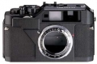

日本Cosina公司在Bessa R2机身的基础上分别推出了采用Nikon S卡口/老式Contax卡口(简称C卡口)的旁轴相机：Bessa R2S和Bessa R2C。
主要用它來裝老S康太斯頭，老S尼康頭用，取景器測距明亮，可測光。老康太斯取景測距太黑了。
做工扎實，烤紋機身感覺良好。測距仿康太斯齒輪很親切。
快門聲和快門手感不高級，不過算可以啦。
刚买来，不好说多的。总体感觉很不错，性价比高。快门声音没有想象中那么大，对焦比XPAN要迅速一点。制造工艺感觉比FM10要好，COSINA公司为尼康OEM过FM10，感觉R2有些技术来自该机。和M口的镜头非常吻合。
旁轴机有的优点它都有了。
没有自拍，没有多次曝光，使之作为一台“工作型”的机器在功能上受到了限制；考虑到基线较短，不建议使用90MM及135MM镜头。